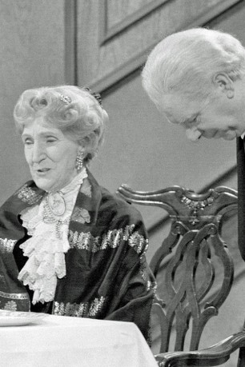

#10423 Glückwunsch Miss Sophie - Die Geschichte von Dinner for One
 
 IMDB-Wertung: 0.0 / 10
IMDB-Wertung: 0.0 / 10  Metascore: 0
Metascore: 0 
Das NDR Fernsehen feierte 2013 das Jubiläum 50 Jahre „Dinner for One“! Im Jahre 1963 hat der NDR den Sketch „Dinner for One“ vor Publikum aufgezeichnet. Keiner der Anwesenden ahnte damals jedoch, dass dieses kleine Bühnenstück in englischer Sprache deutsche Fernsehgeschichte schreiben würde. Es ist bis heute die erfolgreichste Fernsehsendung der Welt!
Jahr: 2013
Dauer: 59 Minuten
FSK:
Land: Studio: Tonspuren:
Untertitel:
Auflösung: 720p (1280x720) Größe: 1730 MB
Genre: Dokumentation
Regisseur:
Drehbuch:
Soundtrack:
Darsteller:
Datei: X:\HD-Serien\Dinner For One\Glückwunsch Miss Sophie - Die Geschichte von Dinner for One (2013, FSK, 1280x720).mkv seit 06.01.2019
Festplatte: HD Serien(A-H)
 Es gibt insgesamt 182 Filme in der Gruppe 'HD-Serien'
Es gibt insgesamt 182 Filme in der Gruppe 'HD-Serien'